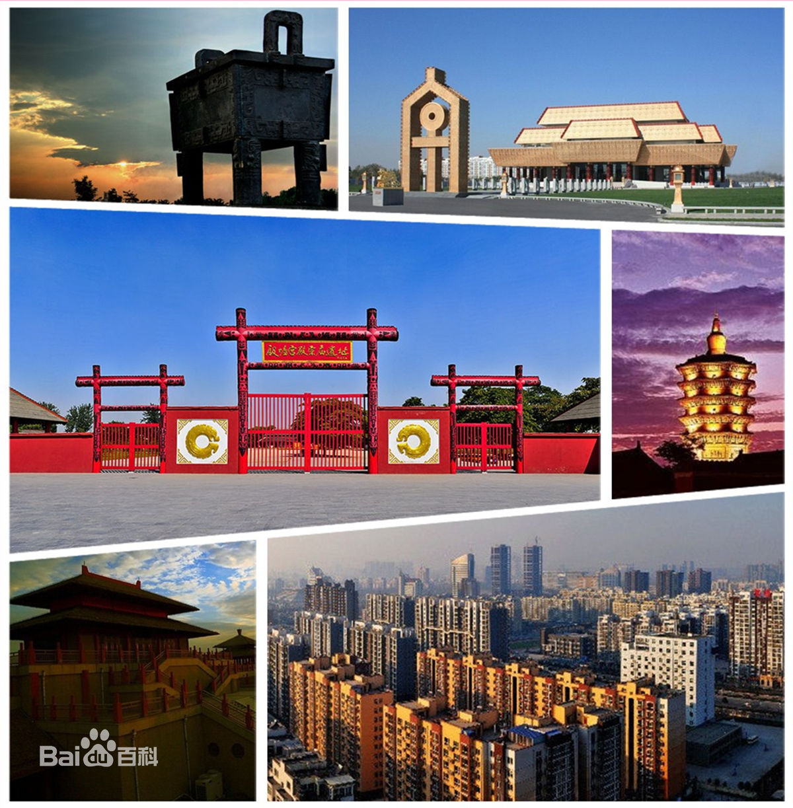

我叫秦昊聪，来自软件一班。我是河南安阳人，有着地道安阳人的开朗与豪爽。不时装一下文艺青年，其实是个乐观小帅哥- -
| 中文名 | 秦昊聪 | 出生日期 | 1998年3月23日 |
| 绰号 | 秦鹅蛋 | 毕业院校 | 安阳市第一中学 |
| 身高 | 183cm | 体重 | 65kg |
| 星座 | 白羊座 | 职业 | 学生 |
| 时段 | 状态 |
| 幼儿园 | 小学渣 |
| 小学 | 乖乖仔 |
| 初中 | 浪荡少年 |
| 高中 | 反叛青年 |
| 大学 | 路人飘过 |
|
if(qed==a cool boy) printf("You are beautiful!\n"); |
安阳，简称殷、邺，位于河南省最北部，地处河南、河北、山西三省交界，西倚太行山，东连华北平原，北邻邯郸，南接鹤壁、新乡。安阳是甲骨文发现地，周易发源地，中国国家历史文化名城，中国八大古都之一，早期中国文明的中心。先后有商朝以及曹魏、后赵、冉魏、前燕、东魏、北齐等七朝在此建都，有“七朝古都”之称，安阳殷墟是中国史上第一个有文献可考、并为考古学和甲骨文所证实的都城遗址。有殷墟和中国大运河（永济渠）两处世界文化遗产。